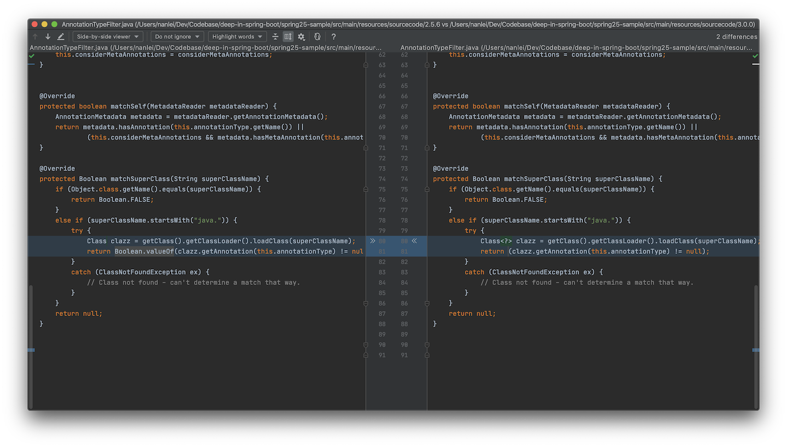

Stereotype Annotation
Spring 模式注解(Stereotype Annotation)
1. 模式注解说明¶
Spring Framework的模式注解在官方Github的Wiki中有说明，可以参考。
A stereotype annotation is an annotation that is used to declare the role that a component plays within the application. For example, the
@Repositoryannotation in the Spring Framework is a marker for any class that fulfills the role or stereotype of a repository (also known as Data Access Object or DAO).
Wiki说明，模式注解(stereotype annotation)是在应用程序中用来声明组件角色的注解。并举例，@Repository注解就是实现仓储模式(或者说是DAO：数据访问对象)类的标记。
@Componentis a generic stereotype for any Spring-managed component. Any component annotated with@Componentis a candidate for component scanning. Similarly, any component annotated with an annotation that is itself meta-annotated with@Componentis also a candidate for component scanning. For example,@Serviceis meta-annotated with@Component.
紧接着，继续说明，@Component是Spring管理组件的通用模式注解，任何被@Component注解的组件都是候选的组件扫描对象。任何被@Component元标注的注解，例如@Service，任何组件被它们标注时，也被视作候选的组件扫描对象。
Core Spring provides several stereotype annotations out of the box, including but not limited to:
@Component,@Service,@Repository,@Controller,@RestController, and@Configuration.@Repository,@Service, etc. are specializations of@Component.
Spring Framework核心部分提供了几种模式注解，包括并不限于下列这些：@Component, @Service, @Repository, @Controller, @RestController和 @Configuration，它们都是@Component的规范。
当然也可以自定义模式注解，可以理解为模式注解就是@Component的派生注解。但Java中的注解不允许继承，可以参考，Spring Framework采用元标注的方式来实现派生。
2. 元注解¶
上述Wiki在开头直接介绍了元注解：
A meta-annotation is an annotation that is declared on another annotation. An annotation is therefore meta-annotated if it is annotated with another annotation. For example, any annotation that is declared to be documented is meta-annotated with
@Documentedfrom thejava.lang.annotationpackage.
元注解指的是一个能声明在其他注解上的注解，同时举例@Documented能够作为任何注解的元注解。
可以看出，元注解是Java中的概念，而非Spring专有。而在Spring中，@Component可以视作为元注解，由上面的模式注解说明即可看出。
3. @Component的派生性¶
@Repository注解在Spring Framework 2.0被引入，可以参考JavaDoc文档，该注解仅仅作为仓储(DAO)的标记使用。
package org.springframework.stereotype;
import java.lang.annotation.*;
@Target({ElementType.TYPE})
@Retention(RetentionPolicy.RUNTIME)
@Inherited
@Documented
public @interface Repository {
}
而到了Spring Framework 2.5，其定义发生了变化，可以参考JavaDoc文档，其不但是标记注解，而且作为Spring Framework的组件(Component)了。在其定义上也被@Component注解标注。
package org.springframework.stereotype;
import java.lang.annotation.*;
@Target({ElementType.TYPE})
@Retention(RetentionPolicy.RUNTIME)
@Documented
@Component
public @interface Repository {
/**
* The value may indicate a suggestion for a logical component name,
* to be turned into a Spring bean in case of an autodetected component.
* @return the suggested component name, if any
*/
String value() default "";
}
因为Spring Framework 2.5同时引入了@Component注解，可以参考JavaDoc文档，被标注的类就是Spring的组件，这些类被视作使用注解配置和类路径扫描时，自动探测的候选对象。
package org.springframework.stereotype;
import java.lang.annotation.*;
@Target(ElementType.TYPE)
@Retention(RetentionPolicy.RUNTIME)
@Documented
public @interface Component {
/**
* The value may indicate a suggestion for a logical component name,
* to be turned into a Spring bean in case of an autodetected component.
* @return the suggested component name, if any
*/
String value() default "";
}
可以看到，标注了@Component的@Repository注解中的属性方法和@Component保持一致，在Spring Framework 2.5引入的模式注解有：

其中，@Controller，@Repository，@Service都是@Component的派生注解。
4. 自定义@Component派生注解¶
以下示例基于**Spring Framework 2.5.6 SEC03**版本进行，添加如下依赖即可：
<dependencies>
<dependency>
<groupId>org.springframework</groupId>
<artifactId>spring</artifactId>
<version>2.5.6.SEC03</version>
</dependency>
</dependencies>
参照@Repository的声明，自定义一个@StringRepository注解：
package deep.in.springframework.annotation;
import org.springframework.stereotype.Component;
import java.lang.annotation.*;
@Target({ElementType.TYPE})
@Retention(RetentionPolicy.RUNTIME)
@Documented
@Component
public @interface StringRepository {
/**
* 属性方法名称必须与{@link Component#value()}保持一致
*
* @return Bean的名称
*/
String value() default "";
}
新建一个Repository类型的类，将其标注为@StringRepository：
package deep.in.springframework.repository;
import deep.in.springframework.annotation.StringRepository;
import java.util.Arrays;
import java.util.List;
@StringRepository("nameRepository")
public class NameRepository {
/**
* 查找所有的名字
*
* @return List
*/
public List<String> findAll() {
return Arrays.asList("Tom", "Jerry", "LN");
}
}
Spring Framework 2.5暂不支持@ComponentScan注解，只能使用传统的XML方式进行配置：
<?xml version="1.0" encoding="UTF-8"?>
<beans xmlns="http://www.springframework.org/schema/beans"
xmlns:xsi="http://www.w3.org/2001/XMLSchema-instance"
xmlns:context="http://www.springframework.org/schema/context"
xsi:schemaLocation="http://www.springframework.org/schema/beans
http://www.springframework.org/schema/beans/spring-beans-2.5.xsd
http://www.springframework.org/schema/context
http://www.springframework.org/schema/context/spring-context.xsd">
<context:component-scan base-package="deep.in.springframework" />
</beans>
编写引导类：
package deep.in.springframework;
import deep.in.springframework.repository.NameRepository;
import org.springframework.context.support.ClassPathXmlApplicationContext;
public class ApplicationBootstrap {
static {
//Spring 2.5 不兼容Java8，降低Java版本
System.setProperty("java.version", "1.7.0");
}
public static void main(String[] args) {
ClassPathXmlApplicationContext context = new ClassPathXmlApplicationContext();
context.setConfigLocation("classpath:/applicationContext.xml");
context.refresh();
NameRepository repository = (NameRepository) context.getBean("nameRepository");
System.out.println(repository.findAll());
context.close();
}
}
整体项目结构为：
$ tree .
.
├── pom.xml
├── src
│ ├── main
│ │ ├── java
│ │ │ └── deep
│ │ │ └── in
│ │ │ └── springframework
│ │ │ ├── ApplicationBootstrap.java
│ │ │ ├── annotation
│ │ │ │ └── StringRepository.java
│ │ │ └── repository
│ │ │ └── NameRepository.java
│ │ └── resources
│ │ └── applicationContext.xml
│ └── test
│ └── java
└── target
├── classes
│ ├── applicationContext.xml
│ └── deep
│ └── in
│ └── springframework
│ ├── ApplicationBootstrap.class
│ ├── annotation
│ │ └── StringRepository.class
│ └── repository
│ └── NameRepository.class
└── generated-sources
└── annotations
20 directories, 9 files
运行引导类，即可得到结果：
Sep 11, 2020 1:43:14 PM org.springframework.context.support.AbstractApplicationContext prepareRefresh
INFO: Refreshing org.springframework.context.support.ClassPathXmlApplicationContext@6e2c634b: display name [org.springframework.context.support.ClassPathXmlApplicationContext@6e2c634b]; startup date [Fri Sep 11 13:43:14 CST 2020]; root of context hierarchy
Sep 11, 2020 1:43:14 PM org.springframework.beans.factory.xml.XmlBeanDefinitionReader loadBeanDefinitions
INFO: Loading XML bean definitions from class path resource [applicationContext.xml]
Sep 11, 2020 1:43:14 PM org.springframework.context.support.AbstractApplicationContext obtainFreshBeanFactory
INFO: Bean factory for application context [org.springframework.context.support.ClassPathXmlApplicationContext@6e2c634b]: org.springframework.beans.factory.support.DefaultListableBeanFactory@c39f790
Sep 11, 2020 1:43:14 PM org.springframework.beans.factory.support.DefaultListableBeanFactory preInstantiateSingletons
INFO: Pre-instantiating singletons in org.springframework.beans.factory.support.DefaultListableBeanFactory@c39f790: defining beans [nameRepository,org.springframework.context.annotation.internalCommonAnnotationProcessor,org.springframework.context.annotation.internalAutowiredAnnotationProcessor,org.springframework.context.annotation.internalRequiredAnnotationProcessor]; root of factory hierarchy
Sep 11, 2020 1:43:14 PM org.springframework.context.support.AbstractApplicationContext doClose
INFO: Closing org.springframework.context.support.ClassPathXmlApplicationContext@6e2c634b: display name [org.springframework.context.support.ClassPathXmlApplicationContext@6e2c634b]; startup date [Fri Sep 11 13:43:14 CST 2020]; root of context hierarchy
Sep 11, 2020 1:43:14 PM org.springframework.beans.factory.support.DefaultSingletonBeanRegistry destroySingletons
INFO: Destroying singletons in org.springframework.beans.factory.support.DefaultListableBeanFactory@c39f790: defining beans [nameRepository,org.springframework.context.annotation.internalCommonAnnotationProcessor,org.springframework.context.annotation.internalAutowiredAnnotationProcessor,org.springframework.context.annotation.internalRequiredAnnotationProcessor]; root of factory hierarchy
[Tom, Jerry, LN]
运行结果表明：@StringRepository作为@Component的派生注解，经Spring Framework扫描注册后，其语义和@Repository类似。被标注的类被Spring上下文初始化为Spring Bean并被容器管理。
5. @Component派生原理¶
基于**Spring Framework 2.5.6.SEC03**版本，上例中使用了<context:component-scan/>元素进行@Component组件扫描。
context前缀的处理类可以在/META-INF/spring.handlers文件中找到，就是:
...
http\://www.springframework.org/schema/context=org.springframework.context.config.ContextNamespaceHandler
...
ContextNamespaceHandler就是context对应的处理类：
package org.springframework.context.config;
...
public class ContextNamespaceHandler extends NamespaceHandlerSupport {
public void init() {
...
registerJava5DependentParser("component-scan",
"org.springframework.context.annotation.ComponentScanBeanDefinitionParser");
...
}
...
}
可以得到<context:component-scan/>的处理类就是org.springframework.context.annotation.ComponentScanBeanDefinitionParser。
ComponentScanBeanDefinitionParser是一种Bean定义解析器的实现，当Spring ApplicationContext加载并解析XML配置文件后，解析到<context:component-scan/>时，ComponentScanBeanDefinitionParser.parse(Element, ParserContext)方法将被调用：
package org.springframework.context.annotation;
...
public class ComponentScanBeanDefinitionParser implements BeanDefinitionParser {
private static final String BASE_PACKAGE_ATTRIBUTE = "base-package";
...
public BeanDefinition parse(Element element, ParserContext parserContext) {
String[] basePackages =
StringUtils.commaDelimitedListToStringArray(element.getAttribute(BASE_PACKAGE_ATTRIBUTE));
// Actually scan for bean definitions and register them.
ClassPathBeanDefinitionScanner scanner = configureScanner(parserContext, element);
Set<BeanDefinitionHolder> beanDefinitions = scanner.doScan(basePackages);
registerComponents(parserContext.getReaderContext(), beanDefinitions, element);
return null;
}
}
解析到属性base-package后，basePackages接收将逗号分隔的列表转为字符串数组，之后传入ClassPathBeanDefinitionScanner.doScan(String...)方法，并返回Set<BeanDefinitionHolder>，而BeanDefinitionHolder包含Bean定义(BeanDefinition)，bean名称和别名信息：
package org.springframework.beans.factory.config;
...
public class BeanDefinitionHolder implements BeanMetadataElement {
private final BeanDefinition beanDefinition;
private final String beanName;
private final String[] aliases;
...
}
在上例中，@StringRepository标注的NameRepository类将被解析为BeanDefinitionHolder，其中的beanName为nameRepository，deep.in.springframework.repository.NameRepository即为BeanDefinition的类型。之后，Spring ApplicationContext将其初始化为Spring Bean。
在 doScan(String...)方法中：
package org.springframework.context.annotation;
...
public class ClassPathBeanDefinitionScanner extends ClassPathScanningCandidateComponentProvider {
...
protected Set<BeanDefinitionHolder> doScan(String... basePackages) {
Set<BeanDefinitionHolder> beanDefinitions = new LinkedHashSet<BeanDefinitionHolder>();
for (int i = 0; i < basePackages.length; i++) {
Set<BeanDefinition> candidates = findCandidateComponents(basePackages[i]);
for (BeanDefinition candidate : candidates) {
String beanName = this.beanNameGenerator.generateBeanName(candidate, this.registry);
if (candidate instanceof AbstractBeanDefinition) {
postProcessBeanDefinition((AbstractBeanDefinition) candidate, beanName);
}
ScopeMetadata scopeMetadata = this.scopeMetadataResolver.resolveScopeMetadata(candidate);
if (checkCandidate(beanName, candidate)) {
BeanDefinitionHolder definitionHolder = new BeanDefinitionHolder(candidate, beanName);
definitionHolder = applyScope(definitionHolder, scopeMetadata);
beanDefinitions.add(definitionHolder);
registerBeanDefinition(definitionHolder, this.registry);
}
}
}
return beanDefinitions;
}
...
}
根据basePackages依次迭代，通过父类ClassPathScanningCandidateComponentProvider提供的findCandidateComponents(String)方法，返回候选的BeanDefinition集合：
package org.springframework.context.annotation;
...
public class ClassPathScanningCandidateComponentProvider implements ResourceLoaderAware {
...
public Set<BeanDefinition> findCandidateComponents(String basePackage) {
Set<BeanDefinition> candidates = new LinkedHashSet<BeanDefinition>();
try {
String packageSearchPath = ResourcePatternResolver.CLASSPATH_ALL_URL_PREFIX +
resolveBasePackage(basePackage) + "/" + this.resourcePattern;
Resource[] resources = this.resourcePatternResolver.getResources(packageSearchPath);
boolean traceEnabled = logger.isTraceEnabled();
boolean debugEnabled = logger.isDebugEnabled();
for (int i = 0; i < resources.length; i++) {
Resource resource = resources[i];
if (traceEnabled) {
logger.trace("Scanning " + resource);
}
if (resource.isReadable()) {
MetadataReader metadataReader = this.metadataReaderFactory.getMetadataReader(resource);
if (isCandidateComponent(metadataReader)) {
ScannedGenericBeanDefinition sbd = new ScannedGenericBeanDefinition(metadataReader);
sbd.setResource(resource);
sbd.setSource(resource);
if (isCandidateComponent(sbd)) {
if (debugEnabled) {
logger.debug("Identified candidate component class: " + resource);
}
candidates.add(sbd);
}
else {
if (debugEnabled) {
logger.debug("Ignored because not a concrete top-level class: " + resource);
}
}
}
else {
if (traceEnabled) {
logger.trace("Ignored because not matching any filter: " + resource);
}
}
}
else {
if (traceEnabled) {
logger.trace("Ignored because not readable: " + resource);
}
}
}
}
catch (IOException ex) {
throw new BeanDefinitionStoreException("I/O failure during classpath scanning", ex);
}
return candidates;
}
...
}
其中，
String packageSearchPath = ResourcePatternResolver.CLASSPATH_ALL_URL_PREFIX +
resolveBasePackage(basePackage) + "/" + this.resourcePattern;
basePackage转换为搜索路径，上例中参数转换为：classpath*:deep/in/springframework/**/*.class
之后，通过：
Resource[] resources = this.resourcePatternResolver.getResources(packageSearchPath);
获取到搜索路径下的所有资源，上例中的运行结果为：
紧接着，迭代获取到的resources对象，资源可以被读取，resource.isReadable()为true时，通过：
MetadataReader metadataReader = this.metadataReaderFactory.getMetadataReader(resource);
获取该资源的MetadataReader对象：
package org.springframework.core.type.classreading;
import org.springframework.core.type.AnnotationMetadata;
import org.springframework.core.type.ClassMetadata;
public interface MetadataReader {
/**
* Read basic class metadata for the underlying class.
*/
ClassMetadata getClassMetadata();
/**
* Read full annotation metadata for the underlying class.
*/
AnnotationMetadata getAnnotationMetadata();
}
之后进行isCandidateComponent(MetadataReader)判断：
package org.springframework.context.annotation;
...
public class ClassPathScanningCandidateComponentProvider implements ResourceLoaderAware {
...
protected boolean isCandidateComponent(MetadataReader metadataReader) throws IOException {
for (TypeFilter tf : this.excludeFilters) {
if (tf.match(metadataReader, this.metadataReaderFactory)) {
return false;
}
}
for (TypeFilter tf : this.includeFilters) {
if (tf.match(metadataReader, this.metadataReaderFactory)) {
return true;
}
}
return false;
}
...
}
其中使用excludeFilters和includeFilters两个条件来进行判断，它们的初始化是在：
package org.springframework.context.annotation;
...
public class ComponentScanBeanDefinitionParser implements BeanDefinitionParser {
...
protected ClassPathBeanDefinitionScanner configureScanner(ParserContext parserContext, Element element) {
...
boolean useDefaultFilters = true;
if (element.hasAttribute(USE_DEFAULT_FILTERS_ATTRIBUTE)) {
useDefaultFilters = Boolean.valueOf(element.getAttribute(USE_DEFAULT_FILTERS_ATTRIBUTE));
}
// Delegate bean definition registration to scanner class.
ClassPathBeanDefinitionScanner scanner = createScanner(readerContext, useDefaultFilters);
}
...
protected ClassPathBeanDefinitionScanner createScanner(XmlReaderContext readerContext, boolean useDefaultFilters) {
return new ClassPathBeanDefinitionScanner(readerContext.getRegistry(), useDefaultFilters);
}
...
}
ClassPathBeanDefinitionScanner的构造方法完成的：
package org.springframework.context.annotation;
...
public class ClassPathBeanDefinitionScanner extends ClassPathScanningCandidateComponentProvider {
public ClassPathBeanDefinitionScanner(BeanDefinitionRegistry registry, boolean useDefaultFilters) {
super(useDefaultFilters);
Assert.notNull(registry, "BeanDefinitionRegistry must not be null");
this.registry = registry;
// Determine ResourceLoader to use.
if (this.registry instanceof ResourceLoader) {
setResourceLoader((ResourceLoader) this.registry);
}
}
}
useDefaultFilters默认为true，则由其父类构造方法：
package org.springframework.context.annotation;
...
public class ClassPathScanningCandidateComponentProvider implements ResourceLoaderAware {
...
public ClassPathScanningCandidateComponentProvider(boolean useDefaultFilters) {
if (useDefaultFilters) {
registerDefaultFilters();
}
}
...
protected void registerDefaultFilters() {
this.includeFilters.add(new AnnotationTypeFilter(Component.class));
}
...
}
includeFilters对象包含了@Component类型的AnnotationTypeFilter对象，而没有设置excludeFilters对象。也就是说，此时的AnnotationTypeFilter可以识别@Component，@Controller，@Repository，@Service类型的注解元信息。
判断完候选Component后，继续执行：
ScannedGenericBeanDefinition sbd = new ScannedGenericBeanDefinition(metadataReader);
ScannedGenericBeanDefinition的定义为：
package org.springframework.context.annotation;
...
public class ScannedGenericBeanDefinition extends GenericBeanDefinition implements AnnotatedBeanDefinition {
private final AnnotationMetadata metadata;
public ScannedGenericBeanDefinition(MetadataReader metadataReader) {
Assert.notNull(metadataReader, "MetadataReader must not be null");
this.metadata = metadataReader.getAnnotationMetadata();
setBeanClassName(this.metadata.getClassName());
}
public final AnnotationMetadata getMetadata() {
return this.metadata;
}
}
最终，只有资源deep.in.springframework.repository.NameRepository被装入Set<BeanDefinition> candidates对象中，而deep.in.springframework.annotation.StringRepository不被装入是因为Ignored because not a concrete top-level class，引导类则是Ignored because not matching any filter的原因被排除了。
至此，deep.in.springframework.repository.NameRepository作为BeanDefinition返回并进行后续的初始化。
同样，在ClassPathBeanDefinitionScanner的JavaDoc文档中，也有说明：
Candidate classes are detected through configurable type filters. The default filters include classes that are annotated with Spring's
@Component,@Repository,@Service, or@Controllerstereotype
ClassPathBeanDefinitionScanner通过默认过滤器引入标记了@Component，@Repository，@Service，或@Controller的类，同理，它也能引入所有标记了@Component的派生注解，比如上例中的@StringRepository。
Spring 3.0引入的@Configuration注解，也是@Component的派生注解，可以参考
package org.springframework.context.annotation;
...
@Target(ElementType.TYPE)
@Retention(RetentionPolicy.RUNTIME)
@Documented
@Component
public @interface Configuration {
...
String value() default "";
...
}
ClassPathBeanDefinitionScanner也允许自定义类型过滤器，可以通过<context:component-scan/>的include-filter和exclude-filter属性来配置。
6. 多层次@Component派生性¶
@SpringBootApplication 是Spring Boot中最常见的注解，在官方文档中，有如下描述：
A single
@SpringBootApplicationannotation can be used to enable those three features, that is:
@EnableAutoConfiguration: enable Spring Boot’s auto-configuration mechanism
@ComponentScan: enable@Componentscan on the package where the application is located (see the best practices)
@Configuration: allow to register extra beans in the context or import additional configuration classespackage com.example.myapplication; import org.springframework.boot.SpringApplication; import org.springframework.boot.autoconfigure.SpringBootApplication; @SpringBootApplication // same as @Configuration @EnableAutoConfiguration @ComponentScan public class Application { public static void main(String[] args) { SpringApplication.run(Application.class, args); } }
也就是说使用了@SpringBootApplication相当于@Configuration，@ComponentScan和@EnableAutoConfiguration的联合注解.
@SpringBootApplication注解的定义为：
package org.springframework.boot.autoconfigure;
...
@Target(ElementType.TYPE)
@Retention(RetentionPolicy.RUNTIME)
@Documented
@Inherited
@SpringBootConfiguration
@EnableAutoConfiguration
@ComponentScan(excludeFilters = { @Filter(type = FilterType.CUSTOM, classes = TypeExcludeFilter.class),
@Filter(type = FilterType.CUSTOM, classes = AutoConfigurationExcludeFilter.class) })
public @interface SpringBootApplication {
...
}
可以看到，@ComponentScan和@EnableAutoConfiguration是直接标注的，而@Configuration却不是，而在@SpringBootConfiguration中：
package org.springframework.boot;
...
/**
* Indicates that a class provides Spring Boot application
* {@link Configuration @Configuration}. Can be used as an alternative to the Spring's
* standard {@code @Configuration} annotation so that configuration can be found
* automatically (for example in tests).
* <p>
* Application should only ever include <em>one</em> {@code @SpringBootConfiguration} and
* most idiomatic Spring Boot applications will inherit it from
* {@code @SpringBootApplication}.
*
* @author Phillip Webb
* @author Andy Wilkinson
* @since 1.4.0
*/
@Target(ElementType.TYPE)
@Retention(RetentionPolicy.RUNTIME)
@Documented
@Configuration
public @interface SpringBootConfiguration {
...
}
其标注了@Configuration注解，已知@Configuration是@Component的派生注解，根据层次关系，可以得到：
+ @SpringBootApplication
+ @SpringBootConfiguration
+ @Configuration
+ @Component
根据注释，@SpringBootConfiguration是Spring Boot 1.4.0版本引入的，之前@SpringBootApplication是直接使用@Configuration注解的。
为了验证@Component派生性的多层次，可以进行验证：
package deep.in.springboot;
import org.springframework.boot.WebApplicationType;
import org.springframework.boot.autoconfigure.SpringBootApplication;
import org.springframework.boot.builder.SpringApplicationBuilder;
import org.springframework.context.ConfigurableApplicationContext;
@SpringBootApplication
public class ComponentHierarchyApp {
public static void main(String[] args) {
Class appClass = ComponentHierarchyApp.class;
ConfigurableApplicationContext context = new SpringApplicationBuilder(appClass).web(WebApplicationType.NONE).run();
System.out.println(context.getBean(appClass));
context.close();
}
}
运行程序，可以得到输出：
所用Spring Boot的版本为2.3.2.RELEASE，其依赖的Spring Framework版本可以从org/springframework/boot/spring-boot-dependencies/2.3.2.RELEASE/spring-boot-dependencies-2.3.2.RELEASE.pom中查到，是5.2.8.RELEASE
说明在该版本下，@Component派生性是多层次的。
回到**Spring Framework 2.5.6.SEC03**下，将示例代码做如下调整：
package deep.in.springframework.annotation;
import org.springframework.stereotype.Component;
import org.springframework.stereotype.Repository;
import java.lang.annotation.*;
@Target({ElementType.TYPE})
@Retention(RetentionPolicy.RUNTIME)
@Documented
@Repository //替换@Component
public @interface StringRepository {
/**
* 属性方法名称必须与{@link Component#value()}保持一致
*
* @return Bean的名称
*/
String value() default "";
}
将@Component注解替换为@Repository注解，再次运行引导程序：

替换注解之后，报错Exception in thread "main" org.springframework.beans.factory.NoSuchBeanDefinitionException: No bean named 'nameRepository' is defined。说明Spring不再将nameRepository视为Bean。
说明当前版本的Spring Framework不支持多层次派生注解，而上面Spring Boot的示例中，ComponentHierarchyApp是支持的，说明是后续Spring版本作出了修改，支持了这一特性。
将Spring版本调整为**3.0.0.RELEASE**：
<dependencies>
<!-- <dependency>-->
<!-- <groupId>org.springframework</groupId>-->
<!-- <artifactId>spring</artifactId>-->
<!-- <version>2.5.6.SEC03</version>-->
<!-- </dependency>-->
<dependency>
<groupId>org.springframework</groupId>
<artifactId>spring-context</artifactId>
<version>3.0.0.RELEASE</version>
</dependency>
</dependencies>
再次运行程序，一切正常，说明该版本中提升了该特性。
7. 多层次@Component派生性原理¶
在上面第5部分分析了@Component派生性原理，下面继续分析**2.5.6.SEC03**和**3.0.0.RELEASE**版本中源码的差异，解释对多层次派生的支持。
首先对比ClassPathScanningCandidateComponentProvider：
package org.springframework.context.annotation;
...
public class ClassPathScanningCandidateComponentProvider implements ResourceLoaderAware {
...
@SuppressWarnings("unchecked")
protected void registerDefaultFilters() {
this.includeFilters.add(new AnnotationTypeFilter(Component.class));
ClassLoader cl = ClassPathScanningCandidateComponentProvider.class.getClassLoader();
try {
this.includeFilters.add(new AnnotationTypeFilter(
((Class<? extends Annotation>) cl.loadClass("javax.annotation.ManagedBean")), false));
logger.info("JSR-250 'javax.annotation.ManagedBean' found and supported for component scanning");
}
catch (ClassNotFoundException ex) {
// JSR-250 1.1 API (as included in Java EE 6) not available - simply skip.
}
try {
this.includeFilters.add(new AnnotationTypeFilter(
((Class<? extends Annotation>) cl.loadClass("javax.inject.Named")), false));
logger.info("JSR-330 'javax.inject.Named' annotation found and supported for component scanning");
}
catch (ClassNotFoundException ex) {
// JSR-330 API not available - simply skip.
}
}
}
registerDefaultFilters()方法变化较大，开始支持JSR-250的@ManagedBean和JSR-330的@Named的AnnotationTypeFilter
findCandidateComponents(String)方法则是小幅改动：

Java 5的增强for循环和一段try-catch控制，并没有本质性变化。
对比AnnotationTypeFilter：

仅有Java 5泛型和自动装箱调整，也没有本质性变化。
SimpleMetadataReader是接口MetadataReader唯一非公有实现类，进行对比：

新增了classMetadata和annotationMetadata属性，且当方法多次调用时，进行非空判断，避免了重复创建。
至此仍没有本质性变化，就需要继续分析ClassMetadataReadingVisitor和AnnotationMetadataReadingVisitor了。
3.0.0.RELEASE的ClassMetadataReadingVisitor新增了一些visit*方法，没有实现层面的变化。
对比AnnotationMetadataReadingVisitor：
可以发现，**3.0.0.RELEASE**的变化主要集中在visitAnnotation方法上，使用AnnotationAttributesReadingVisitor取代了**2.5.6.SEC03**中的EmptyVisitor匿名内部类实现。
**2.5.6.SEC03**的主要实现是：
public void visitEnd() {
try {
Class annotationClass = classLoader.loadClass(className);
...
// Register annotations that the annotation type is annotated with.
Annotation[] metaAnnotations = annotationClass.getAnnotations();
Set<String> metaAnnotationTypeNames = new HashSet<String>();
for (Annotation metaAnnotation : metaAnnotations) {
metaAnnotationTypeNames.add(metaAnnotation.annotationType().getName());
}
metaAnnotationMap.put(className, metaAnnotationTypeNames);
}
catch (ClassNotFoundException ex) {
// Class not found - can't determine meta-annotations.
}
attributesMap.put(className, attributes);
}
之前编写的NameRepository的注解层次为：
+ @Component
+ @StringRepository
+ NameRepository
结合上述代码，annotationClass就是@StringRepository，因为metaAnnotations数组仅仅获取当前类所标注的注解，所以此时只有@Repository而没有 @Component，由于**2.5.6.SEC03**中的实现未使用层次递归获取Annotation[]，所以仅支持单层次的 @Component派生。
**3.0.0.RELEASE**的实现为：
public void visitEnd() {
this.attributesMap.put(this.annotationType, this.localAttributes);
try {
Class<?> annotationClass = this.classLoader.loadClass(this.annotationType);
...
// Register annotations that the annotation type is annotated with.
Set<String> metaAnnotationTypeNames = new LinkedHashSet<String>();
for (Annotation metaAnnotation : annotationClass.getAnnotations()) {
metaAnnotationTypeNames.add(metaAnnotation.annotationType().getName());
if (!this.attributesMap.containsKey(metaAnnotation.annotationType().getName())) {
this.attributesMap.put(metaAnnotation.annotationType().getName(),
AnnotationUtils.getAnnotationAttributes(metaAnnotation, true));
}
for (Annotation metaMetaAnnotation : metaAnnotation.annotationType().getAnnotations()) {
metaAnnotationTypeNames.add(metaMetaAnnotation.annotationType().getName());
}
}
if (this.metaAnnotationMap != null) {
this.metaAnnotationMap.put(this.annotationType, metaAnnotationTypeNames);
}
}
catch (ClassNotFoundException ex) {
// Class not found - can't determine meta-annotations.
}
}
从代码中可以看出，第一层循环for (Annotation metaAnnotation : annotationClass.getAnnotations())是获取第一层元注解数组，第二层循环for (Annotation metaMetaAnnotation : metaAnnotation.annotationType().getAnnotations())是在第一层的基础上再次获取元注解数组。
结合@StringRepository，第一层元注解@Repository是metaAnnotation，第二层元注解@Component是metaMetaAnnotation。
此处的实现仍然存在问题，它指处理了两层@Component派生，而没有处理多层@Component派生，下面进行验证：
- 声明
@FirstLevelRepository和@SecondLevelRepository
package deep.in.springframework.annotation;
import org.springframework.stereotype.Repository;
import java.lang.annotation.*;
@Target({ElementType.TYPE})
@Retention(RetentionPolicy.RUNTIME)
@Documented
@Repository
public @interface FirstLevelRepository {
String value() default "";
}
package deep.in.springframework.annotation;
import java.lang.annotation.*;
@Target({ElementType.TYPE})
@Retention(RetentionPolicy.RUNTIME)
@Documented
@FirstLevelRepository
public @interface SecondLevelRepository {
String value() default "";
}
其中@FirstLevelRepository是第二层@Component注解，@SecondLevelRepository是第三层@Component注解，整体的派生层次为：
@SecondLevelRepository
|- @FirstLevelRepository
|- @Repository
|- @Component
- 标注
@FirstLevelRepository和@SecondLevelRepository
package deep.in.springframework.repository;
import deep.in.springframework.annotation.FirstLevelRepository;
@FirstLevelRepository("myFirstLevelRepository")
public class MyFirstLevelRepository {
}
package deep.in.springframework.repository;
import deep.in.springframework.annotation.SecondLevelRepository;
@SecondLevelRepository("mySecondLevelRepository")
public class MySecondLevelRepository {
}
- 配置
@Component扫描
<?xml version="1.0" encoding="UTF-8"?>
<beans xmlns="http://www.springframework.org/schema/beans"
xmlns:xsi="http://www.w3.org/2001/XMLSchema-instance"
xmlns:context="http://www.springframework.org/schema/context"
xsi:schemaLocation="http://www.springframework.org/schema/beans
http://www.springframework.org/schema/beans/spring-beans.xsd
http://www.springframework.org/schema/context
http://www.springframework.org/schema/context/spring-context.xsd">
<!-- 激活注解驱动特性 -->
<context:annotation-config/>
<context:component-scan base-package="deep.in.springframework"/>
</beans>
由于Spring Framework 3.0.0.RELEASE还未引入@ComponentScan，因此仍然采用XML元素<context:component-scan>组件扫描的方式。
- 编写引导类
package deep.in.springframework;
import org.springframework.context.support.ClassPathXmlApplicationContext;
public class ApplicationBootstrap {
public static void main(String[] args) {
ClassPathXmlApplicationContext context = new ClassPathXmlApplicationContext();
context.setConfigLocation("classpath:/applicationContext.xml");
context.refresh();
System.out.println(context.containsBean("myFirstLevelRepository"));
System.out.println(context.containsBean("mySecondLevelRepository"));
context.close();
}
}
运行程序，得到结果：
Oct 14, 2020 11:10:45 PM org.springframework.context.support.AbstractApplicationContext prepareRefresh
INFO: Refreshing org.springframework.context.support.ClassPathXmlApplicationContext@439f5b3d: startup date [Wed Oct 14 23:10:45 CST 2020]; root of context hierarchy
Oct 14, 2020 11:10:45 PM org.springframework.beans.factory.xml.XmlBeanDefinitionReader loadBeanDefinitions
INFO: Loading XML bean definitions from class path resource [applicationContext.xml]
Oct 14, 2020 11:10:45 PM org.springframework.beans.factory.support.DefaultListableBeanFactory preInstantiateSingletons
INFO: Pre-instantiating singletons in org.springframework.beans.factory.support.DefaultListableBeanFactory@3b6eb2ec: defining beans [org.springframework.context.annotation.internalConfigurationAnnotationProcessor,org.springframework.context.annotation.internalAutowiredAnnotationProcessor,org.springframework.context.annotation.internalRequiredAnnotationProcessor,org.springframework.context.annotation.internalCommonAnnotationProcessor,myFirstLevelRepository]; root of factory hierarchy
true
false
Oct 14, 2020 11:10:45 PM org.springframework.context.support.AbstractApplicationContext doClose
INFO: Closing org.springframework.context.support.ClassPathXmlApplicationContext@439f5b3d: startup date [Wed Oct 14 23:10:45 CST 2020]; root of context hierarchy
Oct 14, 2020 11:10:45 PM org.springframework.beans.factory.support.DefaultSingletonBeanRegistry destroySingletons
INFO: Destroying singletons in org.springframework.beans.factory.support.DefaultListableBeanFactory@3b6eb2ec: defining beans [org.springframework.context.annotation.internalConfigurationAnnotationProcessor,org.springframework.context.annotation.internalAutowiredAnnotationProcessor,org.springframework.context.annotation.internalRequiredAnnotationProcessor,org.springframework.context.annotation.internalCommonAnnotationProcessor,myFirstLevelRepository]; root of factory hierarchy
Process finished with exit code 0
从结果即可看出，Spring Framework 3.0.0.RELEASE仅仅支持两层@Component派生，原因就是AnnotationAttributesReadingVisitor没有递归查找所有层次的元注解。
继续查看Spring 3.x的AnnotationAttributesReadingVisitor源代码：
若要详细查看各个版本中的源代码，修改pom.xml中的版本号即可：
<dependencies>
<dependency>
<groupId>org.springframework</groupId>
<artifactId>spring-context</artifactId>
<version>3.0.0.RELEASE</version>
</dependency>
</dependencies>
其中的版本号，可以在此查看
在Spring Framework 3的各版本中，AnnotationAttributesReadingVisitor都没有本质的变化，而在Spring Framework 4.0.x中，代码发生了改变。
@Override
public void doVisitEnd(Class<?> annotationClass) {
super.doVisitEnd(annotationClass);
List<AnnotationAttributes> attributes = this.attributesMap.get(this.annotationType);
if (attributes == null) {
this.attributesMap.add(this.annotationType, this.attributes);
}
else {
attributes.add(0, this.attributes);
}
Set<String> metaAnnotationTypeNames = new LinkedHashSet<String>();
Annotation[] metaAnnotations = AnnotationUtils.getAnnotations(annotationClass);
if (!ObjectUtils.isEmpty(metaAnnotations)) {
for (Annotation metaAnnotation : metaAnnotations) {
if (!AnnotationUtils.isInJavaLangAnnotationPackage(metaAnnotation)) {
recursivelyCollectMetaAnnotations(metaAnnotationTypeNames, metaAnnotation);
}
}
}
if (this.metaAnnotationMap != null) {
this.metaAnnotationMap.put(annotationClass.getName(), metaAnnotationTypeNames);
}
}
private void recursivelyCollectMetaAnnotations(Set<String> visited, Annotation annotation) {
String annotationName = annotation.annotationType().getName();
if (!AnnotationUtils.isInJavaLangAnnotationPackage(annotation) && visited.add(annotationName)) {
// Only do further scanning for public annotations; we'd run into
// IllegalAccessExceptions otherwise, and we don't want to mess with
// accessibility in a SecurityManager environment.
if (Modifier.isPublic(annotation.annotationType().getModifiers())) {
this.attributesMap.add(annotationName, AnnotationUtils.getAnnotationAttributes(annotation, false, true));
for (Annotation metaMetaAnnotation : annotation.annotationType().getAnnotations()) {
recursivelyCollectMetaAnnotations(visited, metaMetaAnnotation);
}
}
}
}
即采用递归方式获取元注解，支持多层次@Component派生。
而Spring Boot诞生之初，就基于了Spring Framework 4.1版本，可以查看，所以Spring Boot与生俱来就支持多层次@Component派生性。